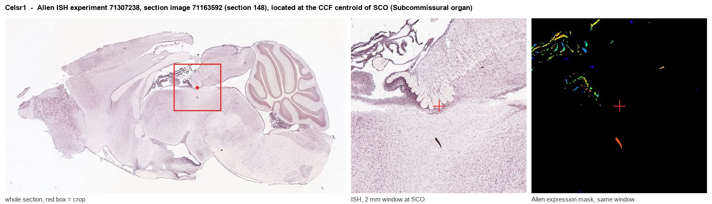
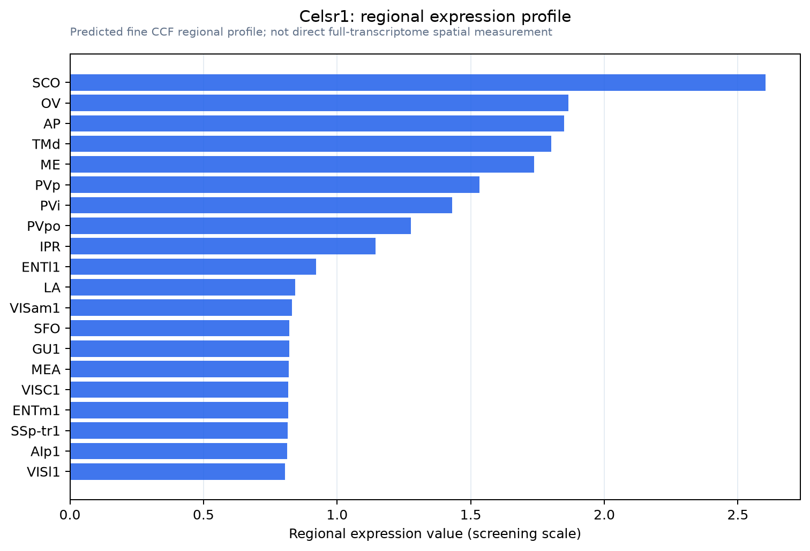

Celsr1
Cadherin EGF LAG seven-pass G-type receptor 1
Spatial tier: REGION_BIASED · Class: GPCR · Top region: SCO (Subcommissural organ) · Positive regions: 34/554
44.8Discovery Score
40.1Targetability Score
CEvidence grade C
What this means: Celsr1: fine CCF profile is region-biased toward SCO (top regions: SCO, OV, AP, TMd, ME); this is a discovery lead, not direct proof.
Function in SCO: evidence, prediction, innovation
- Gene function
- CELSR1 is a cadherin-EGF-LAG seven-pass G-type receptor, the mammalian orthologue of Drosophila Flamingo and a core component of the planar cell polarity pathway. Through homophilic adhesion and asymmetric complexes with Vangl2, Frizzled and Dishevelled it aligns cells and their cilia across a tissue plane; mutations cause neural tube defects and disordered ependymal cilia.
- Region function
- The subcommissural organ is an ependymal secretory gland in the roof of the third ventricle at the posterior commissure; it secretes SCO-spondin into cerebrospinal fluid to form Reissner's fibre, which contributes to CSF flow, aqueduct patency and axial/neurodevelopmental signalling.
- Published in this region
- inferred No region-specific literature found. The closest finding is directly adjacent in tissue terms: Boutin 2014 showed that planar cell polarity genes including Celsr1 control both rotational polarity and ciliogenesis in brain ependymal cells, the cell class from which the subcommissural organ is derived and which sets cerebrospinal fluid flow.
- Predicted function
- Prediction: CELSR1 in the subcommissural organ would organise the planar polarity and apical architecture of its specialised secretory ependymocytes, orienting the apical secretory pole and the ciliary beat that carries SCO-spondin caudally into Reissner's fibre. Conditional Celsr1 deletion (FoxJ1-CreER) is predicted to misalign SCO ependymal cilia and apical polarity, reduce or misdirect Reissner's fibre assembly and produce aqueduct stenosis and hydrocephalus, providing a mechanistic link between PCP mutations and congenital hydrocephalus.
- Innovation
- ★★★★☆ 4/5 PCP control of ependymal cilia is established, but nobody has asked whether it also organises the secretory subcommissural organ, where the consequence would be CSF-flow pathology.
- Tools
- Celsr1 mutant mice (Crash/Scy alleles) and floxed Celsr1; FoxJ1-CreER for ependymal deletion; anti-CELSR1 and anti-SCO-spondin antibodies; Vangl2 (Loop-tail) mice as pathway comparison.
- References
Direct evidence located at the region

Allen ISH experiment 71307238, section image 71163592 (section 148): the section that contains the CCF centroid of Subcommissural organ according to the Allen image-to-atlas alignment (reference_to_image), with a 2 mm window around that point. Left: whole section, red box = window. Middle: ISH signal. Right: Allen's expression-mask view of the same window. open this image in the Allen viewer
Look it up yourself: Allen Mouse Brain ISH for Celsr1Allen reference atlas: SCO (structure 599626923)ABC Atlas MERFISH viewer(in the ABC Atlas choose dataset MERFISH-C57BL6J-638850-CCF, colour cells by gene "Celsr1" or by parcellation_substructure "SCO")All genes confined to SCO + 3-D brain
Direct spatial evidence
MERFISH REGION LOCATOR

Regional expression figure

Predicted WMB × fine-CCF profile; not direct full-transcriptome spatial measurement.
Spatial profile
Evidence and specificity
- Evidence status
- PREDICTED_FINE
- Direct sources
- None; predicted localization only
- Exclusive threshold
- 12 positive regions out of 554
- Spatial specificity
- 0.287
- Top-region fraction
- 0.050
- Filter status
- PASS
Interpretation limits
- Cell-type-to-region projection is imputed expression, not direct spatial measurement.
- Adult reference atlases do not establish stability across age, sex, strain, state, or disease.
- Transcript abundance does not guarantee protein abundance or genetic-tool performance.